Lorsque l’on cherche à calculer le champ diffracté par un objet rigide, il est classique de restreindre le domaine de calcul à une boule de rayon R et de poser des conditions absorbantes sur sa frontière. Ce choix de frontière fictive n’est pas du tout optimal lorsque l’objet diffractant est allongé dans une direction. Nous avons montré qu’il est possible de construire des conditions aux limites absorbantes d’ordre arbitraire sur une frontière sphéroïdale en dimension 3. To compute the field scattered by a rigid object, the computational domain is usually truncated by a ball of radius R carrying an absorbing boundary condition. This artificial boundary is far from optimal when the scatterer is elongated in one direction. We showed that absorbing boundary conditions of arbitrary order can be built on a prolate spheroidal boundary in three dimensions.
- Sparsified discrete wave problem involving radiation condition on a prolate spheroidal surface — H. Barucq, M. Fares, C. Kruse, S. Tordeux, IMA Journal of Numerical Analysis 41(1), 2021, pp. 315–343
- Non-reflecting boundary condition on ellipsoidal boundary — H. Barucq, A.-G. Dupouy Saint-Guirons, S. Tordeux, Numerical Analysis and Applications 5(2), 2012, pp. 109–115
- ExposéTalk : Absorbing boundary conditions for an elongated body, Novossibirsk, 2012
Un exemple : la SER d’une fuséeExample: radar cross-section of a rocket
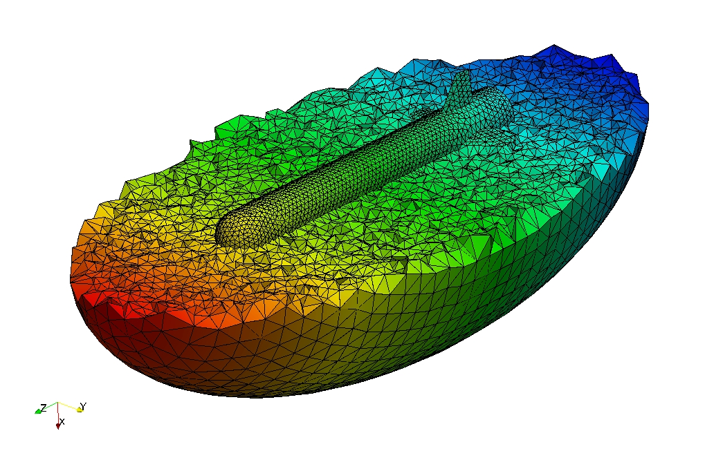

Nous comparons les résultats de notre méthode à une solution de référence obtenue par le code CESC du Cerfacs. La surface équivalente radar (SER) de la fusée, en dB, est représentée sur la sphère unité en fonction de l’ordre de la condition aux limites absorbante (CLA). We compare our method with a reference solution computed by Cerfacs’ CESC code. The radar cross-section (RCS) of the rocket, in dB, is plotted on the unit sphere for increasing orders of the absorbing boundary condition (ABC).
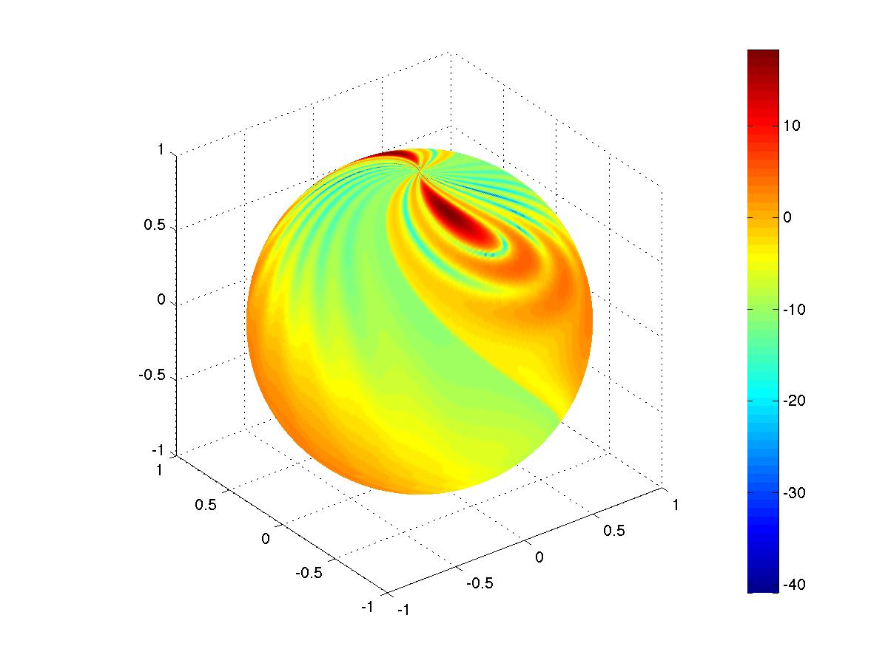
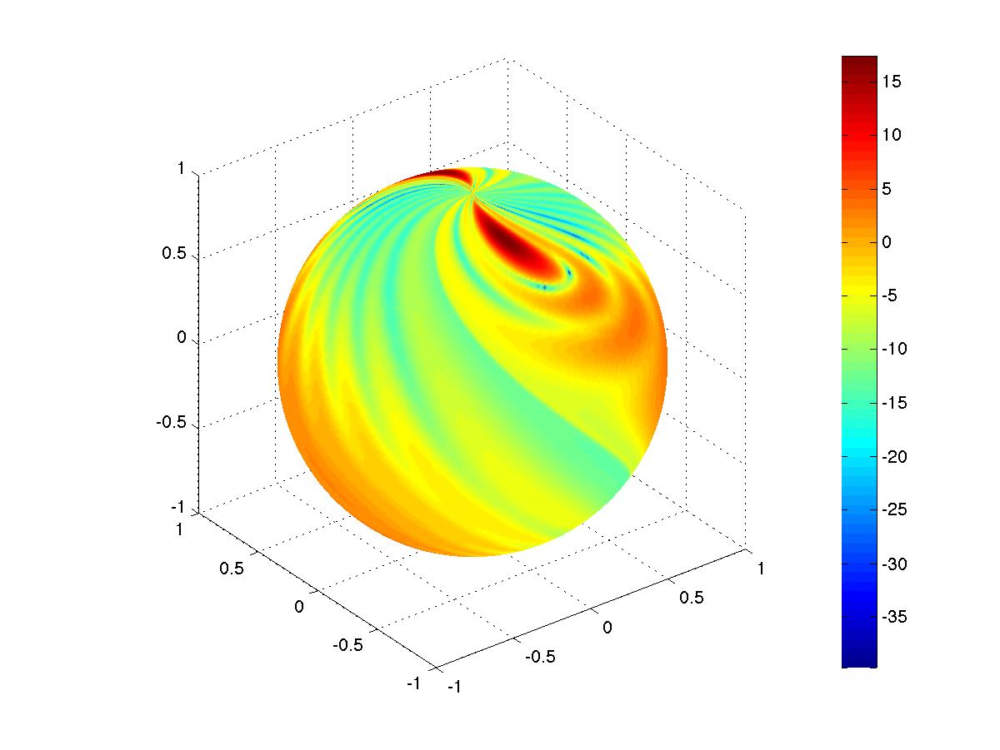
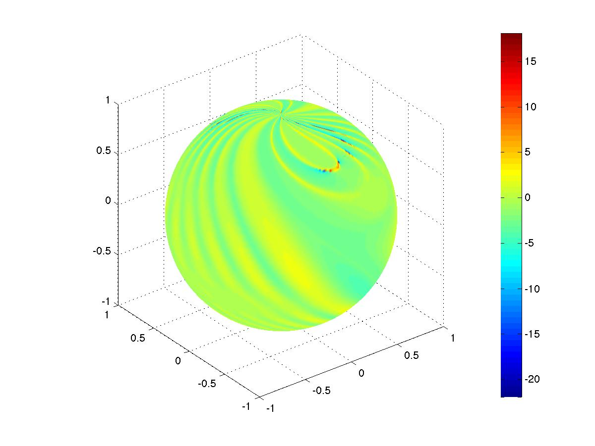
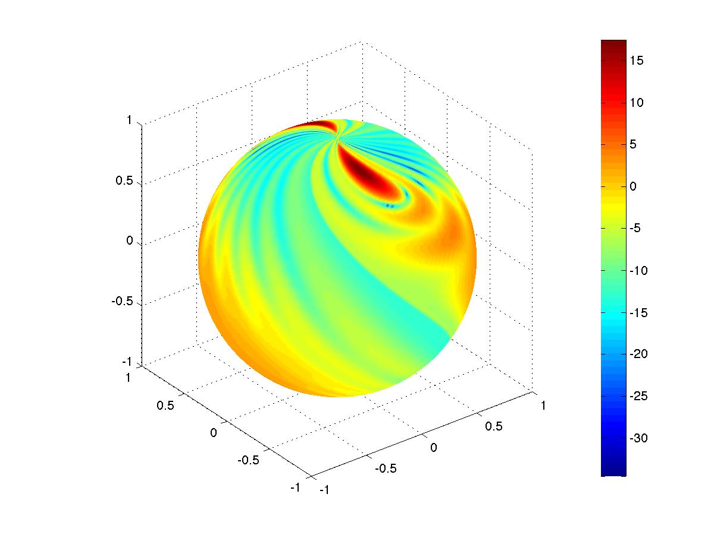
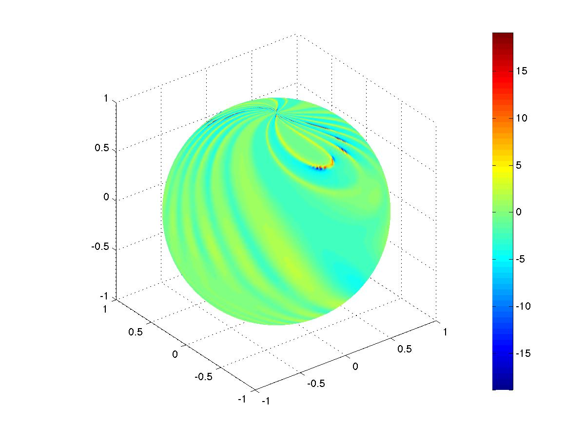
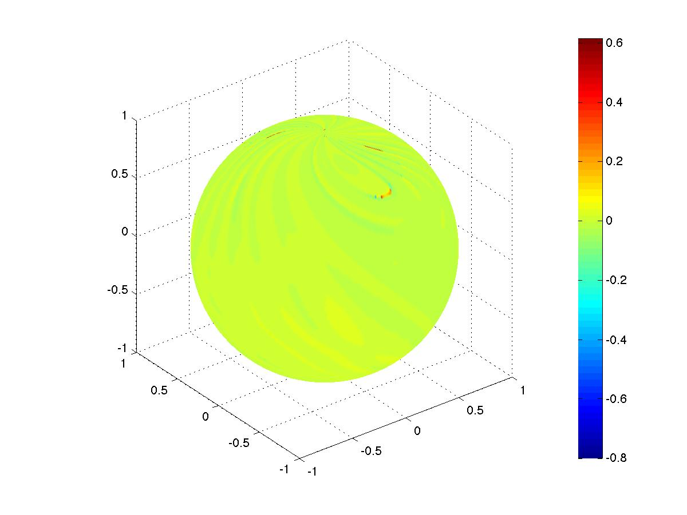
Coupe de la SER en θ = 60°RCS cut at θ = 60°
Comparaison d’une coupe de la SER approchée avec la SER de référence calculée par CESC.A cut of the approximate RCS compared with the CESC reference.
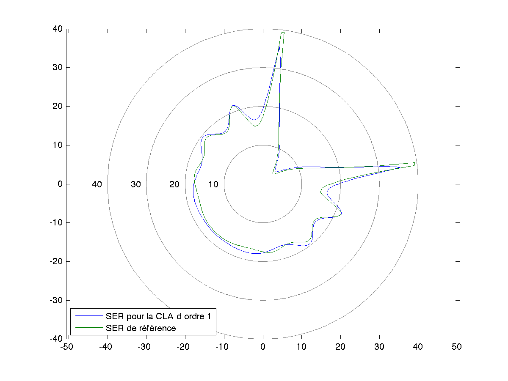
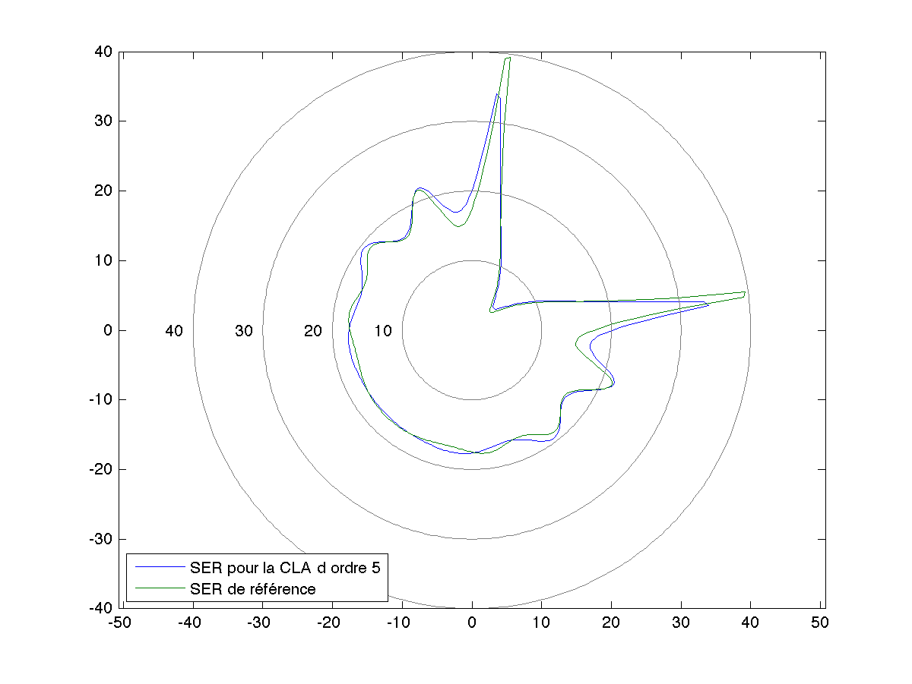
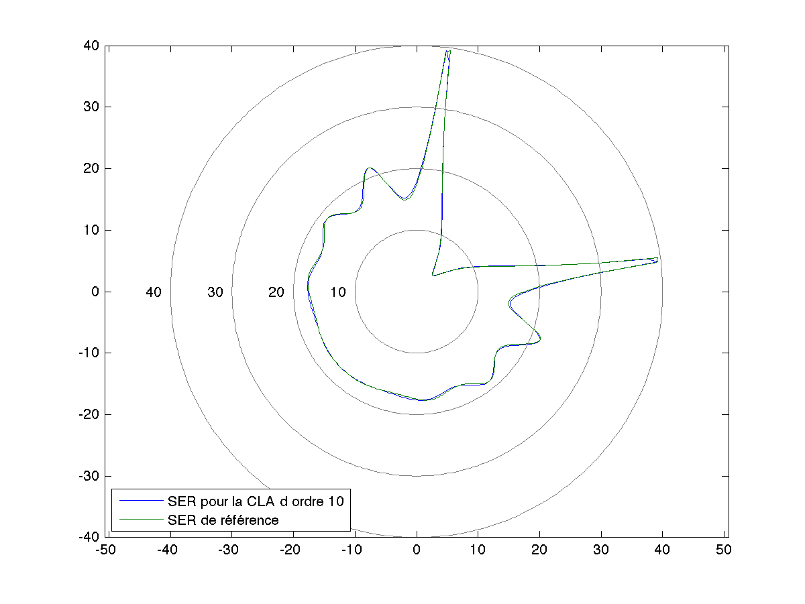
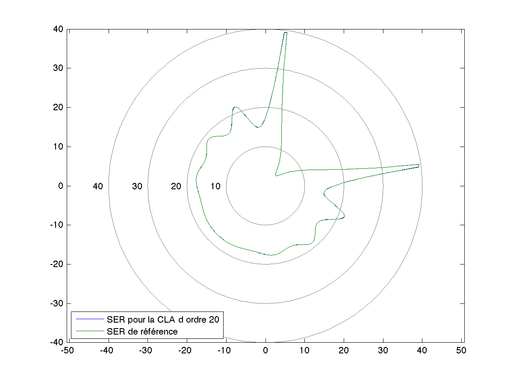
Un second exemple : un sous-marinSecond example: a submarine
Pour une maquette de sous-marin, nous comparons une condition de radiation exacte, obtenue par troncature de l’opérateur Dirichlet-to-Neumann exprimé sur la base des fonctions sphéroïdales, à la condition absorbante classique et à un couplage éléments finis – éléments de frontière. La matrice pleine associée à la condition exacte se décompose en un bloc plein restreint à la frontière extérieure et une matrice creuse d’éléments finis ; un algorithme de Sherman-Morrison évite d’inverser le bloc plein. On obtient ainsi une méthode d’ordre élevé à faible coût mémoire. For a mock-up submarine, we compare an exact radiation condition, obtained by truncating the Dirichlet-to-Neumann operator expanded on spheroidal functions, with the classical absorbing condition and with a finite element – boundary element coupling. The dense matrix of the exact condition splits into a full block restricted to the outer boundary and a sparse finite element matrix; a Sherman-Morrison algorithm avoids inverting the full block. The result is a high-order method with a low memory footprint.
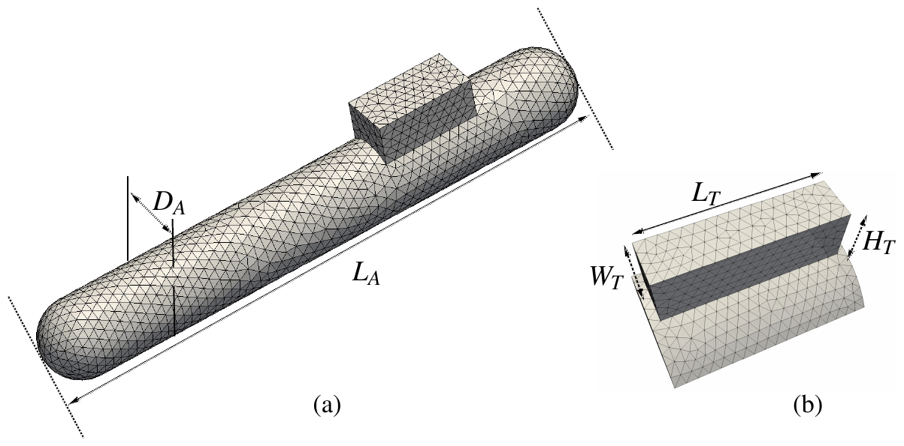
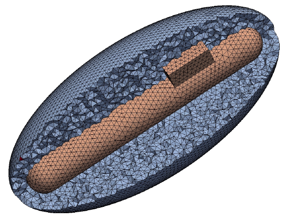
Figures extraites deFigures from H. Barucq, M. Fares, C. Kruse, S. Tordeux, IMA J. Numer. Anal. 41(1), 2021 (hal-02386957).
Les fonctions sphéroïdales angulairesAngular spheroidal functions
Ce projet a nécessité le calcul des fonctions sphéroïdales angulaires de première espèce. Voici la partie réelle des premières fonctions Ymn.This project required computing the angular spheroidal functions of the first kind. Below is the real part of the first functions Ymn.
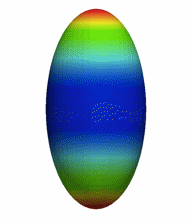
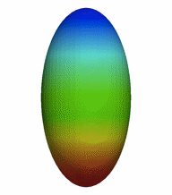
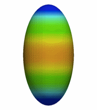
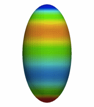
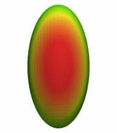
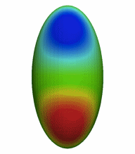
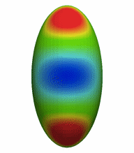
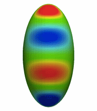
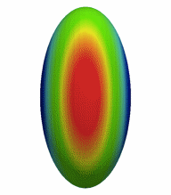
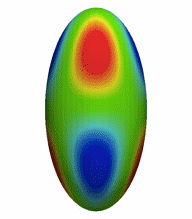
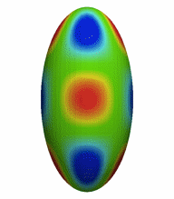
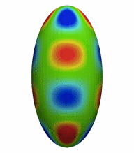
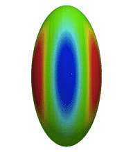
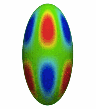
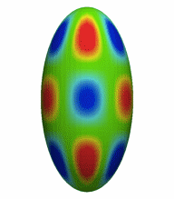
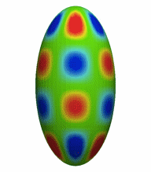
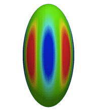
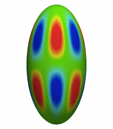
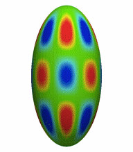
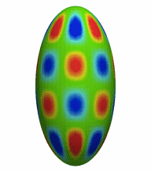
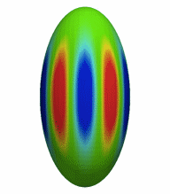
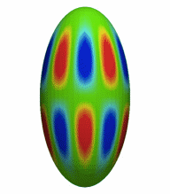
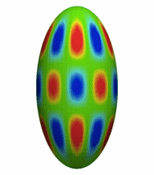
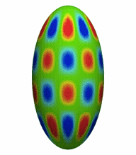